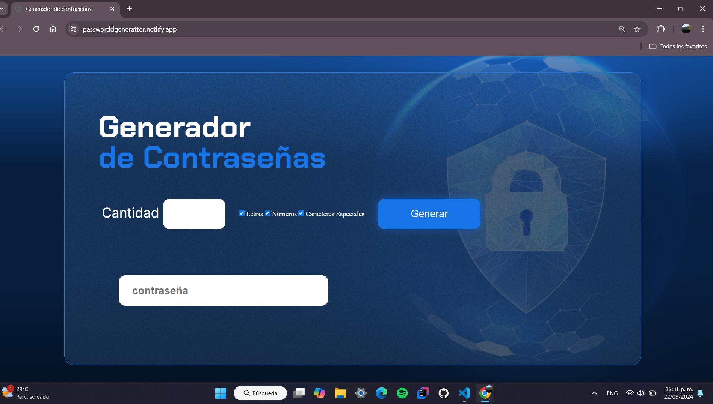
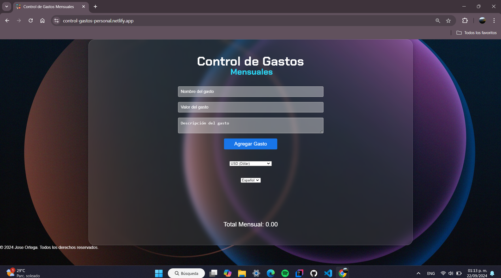

Sobre mí
Hola, soy José Ortega, estudiante de Ingeniería en Sistemas en el Instituto Tecnológico Superior de Zonzolica, actualmente cursando mi tercer año. Desde que empecé mis estudios, he cultivado una profunda pasión por el desarrollo web, donde me he dedicado a aprender tanto en clase como de forma autodidacta.
Me considero un desarrollador web entusiasta, con experiencia en la creación de aplicaciones interactivas y visualmente atractivas. A lo largo de mi formación, he adquirido habilidades en diversas tecnologías, incluyendo HTML, CSS y JavaScript, así como en frameworks modernos que potencian la creación de proyectos innovadores.
Además, disfruto enfrentar nuevos desafíos y proyectos que me permitan seguir creciendo profesionalmente. Me encanta aprender y mantenerme al día con las últimas tendencias y mejores prácticas en el desarrollo web, lo que me permite adaptar mis habilidades a un entorno en constante evolución.
Estoy emocionado por las oportunidades que el futuro me depara en el mundo del desarrollo y siempre estoy dispuesto a colaborar en proyectos que busquen impactar positivamente a la comunidad.
Habilidades
Lenguajes de Programación
- JavaScript
- Python
- Java
- HTML
- CSS
- Dart
- Flutter
Análisis de Datos
- Apache Hadoop
- MySQL
Software y Herramientas
- GitHub
- Markdown
- MySQL
- JSON
- IntelliJ IDEA
IDEs
- Visual Studio Code
- IntelliJ IDEA
Sistemas Operativos
- Windows
- Kali Linux
Proyectos
Generador de contraseña
Una pagina que te genera tus contraseñas, \utilice Html, CSS y JS .
Ver ProyectoControl de gastos
Control de Gastos Personal es una aplicación web que permite a los usuarios gestionar sus finanzas registrando ingresos y gasto.
Ofrece visualizaciones intuitivas y análisis para ayudar a mejorar la salud financiera y tomar decisiones informadas
Ver ProyectoContacto
Si deseas ponerte en contacto conmigo, no dudes en enviarme un correo electrónico:
Correo: joseortegahac@gmail.com